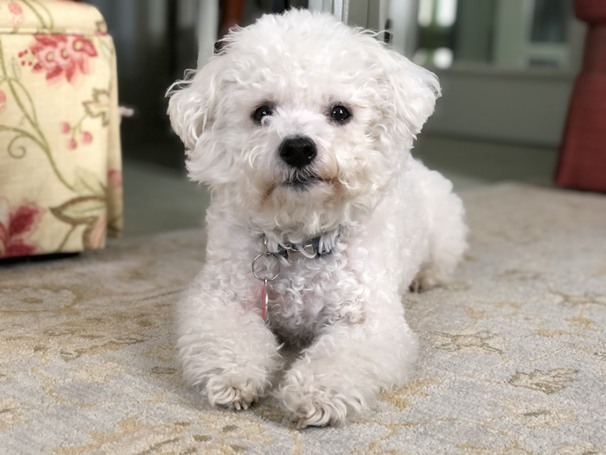

비숑 프리제 키우기 완벽 가이드 — 성격·수명·질병·미용 관리

솜사탕 같은 하얀 털과 밝고 사교적인 성격으로 사랑받는 비숑 프리제. 낯선 사람·강아지에게도 우호적이라 사회화가 수월하지만, 특유의 하얀 곱슬 털은 매일 빗질과 정기 미용이 필수입니다. 성격부터 질병, 미용까지 정리했습니다.
한눈에 보는 비숑 프리제
| 크기 | 소형견 (체중 약 5~8kg) |
|---|---|
| 수명 | 약 13~16년 |
| 털빠짐 | 적음 (곱슬 이중모, 엉킴 주의) |
| 활동량 | 중간 (밝고 활발) |
| 성격 | 사교적·명랑 |
| 초보자 적합도 | 높음 (미용 각오 필요) |
성격과 기질
비숑의 성격에서 가장 먼저 눈에 띄는 건 감정이 그대로 드러난다는 점입니다. 반가우면 온몸을 흔들고, 야단맞으면 눈에 띄게 위축됩니다. 사람의 표정과 목소리 톤을 민감하게 읽는 편이라 집안 분위기가 가라앉으면 같이 조용해지기도 해요. 강하게 혼내는 방식이 유독 역효과가 큰 이유가 여기에 있습니다.
또 하나 자주 보이는 것이 갑자기 집 안을 전속력으로 도는 행동입니다. 목욕 직후나 놀이가 한창일 때 특히 잦은데, 이상 행동이 아니라 흥분이 빠져나가는 방식이니 말리기보다 미끄러운 바닥과 부딪힐 만한 모서리를 정리해 두는 편이 낫습니다. 원목이나 타일 바닥에서 급하게 방향을 틀다 무릎을 다치는 사고가 여기서 나옵니다.
주의할 점은 겁이 없다는 것입니다. 처음 보는 개에게도 덩치를 가리지 않고 다가가는데, 상대가 받아주지 않으면 5kg 남짓한 몸으로는 피할 방법이 없습니다. 산책 중 다른 개와 인사시킬 때는 상대 보호자에게 먼저 물어보고, 그 순간만큼은 줄을 짧게 잡으세요. 애착이 강한 품종이라 분리불안 대비도 어릴 때부터 함께 시작해야 합니다.
입양 전 현실 체크 (미용비가 관건)
비숑을 키울 때 지출 1위는 사료가 아니라 미용입니다. 이 항목을 빼고 예산을 잡으면 나중에 미용 주기를 늘리게 되고, 그때부터 털 문제가 시작됩니다. 입양 전에 반드시 계산해봐야 할 부분이에요.
| 항목 | 대략적인 비용 | 주기 |
|---|---|---|
| 전체 미용 | 6~10만 원 | 4~6주마다 |
| 부분 미용(위생·발톱·귀) | 2~4만 원 | 전체 미용 사이에 필요 시 |
| 사료·간식 | 3~6만 원 | 월 |
| 심장사상충·외부기생충 예방 | 2~3만 원 | 월 |
미용을 5주 간격으로만 잡아도 연간 60~100만 원 선입니다. 여기에 사료와 예방약을 더하면 별일 없는 달에도 월 10~18만 원 정도로 보면 됩니다. 직접 미용에 도전하는 분도 있지만, 곱슬 이중모는 난이도가 높은 축이라 처음부터 전부 집에서 해결하겠다는 계획은 권하지 않습니다.
시간과 주거 환경
- 매일 빗질 10~15분 — 미룰수록 시간이 늘어나는 종류의 일입니다.
- 산책 하루 30분씩 2회 — 소형견치고 활력이 좋아 실내 놀이만으로는 남습니다. 적정 산책량은 크기별 산책 가이드를 참고하세요.
- 아파트·원룸 적합도는 높은 편 — 몸집이 작고 경계 짖음이 심한 품종은 아닙니다. 다만 관심을 요구할 때 내는 소리가 있어, 이 부분은 훈련으로 잡아야 합니다.
주의해야 할 질병
- 눈물자국(유루증) — 하얀 털이라 착색이 도드라집니다. 원인을 찾아 관리해야 합니다.
- 슬개골 탈구 — 소형견 공통. (슬개골 탈구 대처법)
- 방광결석·요로 질환 — 비숑에게 상대적으로 흔한 편이라 수분 섭취와 정기 검진이 중요합니다.
- 피부 알레르기 — 예민한 피부라 알레르기·아토피가 생기기 쉽습니다.
- 치주 질환 — 소형견 공통. 양치 습관 필수.
나이대별 관리 포인트
퍼피 시기 (0~12개월)
생후 8~12개월 무렵 부드러운 배냇털이 성견의 곱슬털로 바뀌는 전환기가 옵니다. 이때 두 종류의 털이 섞이면서 엉킴이 갑자기 늘어나는데, "지금까지 괜찮았는데 왜 이러지" 하는 시기가 바로 여기예요. 이 몇 달만 빗질을 늘려 넘기면 이후가 편해집니다.
첫 미용은 접종이 어느 정도 진행된 뒤 가벼운 위생 미용부터 시작하는 것이 좋습니다. 처음부터 전체 미용으로 오래 붙잡혀 있으면 미용대를 무서워하게 되고, 그게 평생 갑니다. 접종 일정은 강아지 예방접종 시기에서 확인하세요. 성장기에는 소파에서 뛰어내리지 않게 하고 미끄럼 방지 매트를 깔아 무릎을 보호해주세요.
성견기 (1~8세)
- 소변 습관 관찰 — 비숑에게 요로 문제가 상대적으로 흔한 만큼, 배뇨 횟수가 늘거나 자세만 잡고 소변이 찔끔 나오는지, 색이 붉지는 않은지 평소에 봐두면 좋습니다.
- 피부 상태 — 알레르기 경향이 있어 발을 계속 핥거나 귀를 자주 터는 행동이 신호가 됩니다. 장마철에는 특히 살펴보세요. (장마철 피부병)
- 양치 — 소형견은 서너 살부터 치석이 눈에 띄기 시작합니다. (양치질 하는 법)
노령기 (9세 이상)
털이 얇아지고 피부가 예민해져 예전과 같은 강도의 빗질을 힘들어합니다. 미용도 한 번에 오래보다 짧게 자주가 낫습니다. 눈이 뿌옇게 변하는 변화, 밤이나 새벽에 나오는 마른기침처럼 예전에 없던 증상이 생기면 나이 탓으로 넘기지 말고 진료를 받아보세요. 소형견에서는 노령기에 심장 쪽 검진을 함께 챙기는 경우가 많습니다.
빗질과 미용 실전
"비숑은 털이 안 빠진다"는 말은 절반만 맞습니다. 빠지긴 하는데 곱슬이라 밖으로 떨어지지 않고 털 안에서 그대로 뭉칩니다. 바닥에 털이 없다고 관리가 덜 필요한 게 아니라, 오히려 방치하면 속에서 펠트처럼 굳어버리는 구조예요.
가장 먼저 엉키는 자리
- 귀 뒤쪽 — 여기가 제일 먼저입니다
- 겨드랑이와 사타구니
- 하네스·목줄이 닿는 부위 — 산책 후 그 자리만 따로 빗어주세요
- 발가락 사이
- 입 주변 — 물과 사료가 묻어 굳습니다
제대로 빗는 법
표면만 쓸어내리는 빗질은 소용이 없습니다. 손으로 털을 가로로 한 줄씩 갈라 뿌리 쪽부터 빗어 올리는 방식으로 해야 속까지 닿습니다. 슬리커 브러시로 훑은 다음 금속 콤이 피부까지 걸림 없이 들어가면 그 부위는 끝난 거예요. 콤이 중간에 막힌다면 아직 안 빗긴 겁니다. 하루 10분씩 매일이, 주말에 한 시간 몰아서 하는 것보다 결과가 좋습니다.
목욕과 드라이
2~3주에 한 번이 무난하고, 진짜 중요한 건 드라이입니다. 곱슬 이중모는 자연 건조하면 마르는 동안 털이 다시 오그라들며 뿌리부터 엉키고, 속이 축축한 채로 남아 피부 트러블로 이어집니다. 드라이기 바람을 쐬면서 동시에 브러시로 펴주는 것이 정석이고, 귀 뒤와 겨드랑이는 마지막에 손으로 만져 확인하세요.
초보자가 자주 하는 실수 4가지
- 미용 주기를 늘리는 것 — 비용을 아끼려고 두세 달에 한 번으로 미루면, 결국 엉킴 때문에 짧게 밀 수밖에 없어 원하던 동그란 모양이 안 나옵니다. 4~6주 간격을 지키는 편이 결과적으로 만족도도 높고 개도 덜 힘들어합니다.
- 목욕 후 대충 말리기 — 수건으로 닦고 자연 건조에 맡기는 것이 비숑에게는 가장 위험한 습관입니다. 곱슬털은 겉이 먼저 마르기 때문에 속이 젖어 있는 걸 알아채기 어렵습니다. 완전히 말릴 시간이 없다면 그날은 목욕을 미루는 편이 낫습니다.
- 눈물자국을 표백하듯 지우려는 것 — 사람용 제품이나 자극적인 세정제로 문지르면 눈 주변 피부만 상합니다. 착색은 이미 물든 털이라 지워지는 게 아니라 새 털이 자라면서 밀려 나가는 것이고, 임의로 약을 먹이는 것은 특히 피해야 합니다. 원인 파악이 먼저입니다.
- 짖을 때 반응해주기 — 요구할 때 짖는 소리에 안아주거나 간식을 주면 그 행동이 강화됩니다. 조용해진 순간에 보상하는 방식으로 뒤집어야 하고, 방법은 짖음 교정 가이드에 정리되어 있습니다.
훈련과 사회화 포인트
비숑은 사람의 반응을 즐기고 먹이 동기도 높아 칭찬 기반 훈련이 아주 잘 통하는 품종입니다. 원래 사람 앞에서 재주를 보이던 역사를 가진 개답게 앉아, 기다려 같은 기본기는 물론 간단한 트릭도 빠르게 배웁니다. 야단치는 방식은 오히려 위축시켜 역효과가 나요.
어려운 지점은 세 가지입니다. 첫째, 배변 훈련이 다른 소형견보다 오래 걸리는 편이라 실수했을 때 혼내지 않고 성공했을 때만 크게 칭찬하는 원칙을 오래 지켜야 합니다. (배변훈련 5단계) 둘째, 혼자 있는 연습은 어릴 때 1분, 5분, 15분 순서로 조금씩 늘려야 합니다. 나갈 때와 들어올 때 크게 인사하지 않는 것만 지켜도 차이가 큽니다.
셋째, 비숑에게만 있는 항목인데 미용대 적응 훈련입니다. 집에서 빗질할 때 미끄럽지 않은 받침 위에 세워두고 발과 귀, 꼬리를 만지는 연습을 해두면 미용실에서 훨씬 수월해집니다. 한 번에 오래 하지 말고 잘 서 있으면 바로 내려주고 간식을 주세요.
관리 포인트 (눈물자국·식이)
눈물자국
눈물은 어느 개나 흐르지만, 그 자리가 계속 젖어 있으면 색이 짙어지고 냄새가 납니다. 그래서 관리의 요령은 닦는 것보다 닦은 뒤 말리는 것에 있어요. 미지근한 물이나 반려동물용 눈가 세정제를 적신 거즈로 훑은 다음, 마른 거즈로 한 번 더 눌러 물기를 걷어내세요. 눈 안쪽 구석 털이 눈을 찌르지 않도록 미용할 때 그 부분을 짧게 부탁해두면 자극 자체가 줄어듭니다.
구분해야 할 것은 원래 있던 착색과 갑자기 심해진 눈물입니다. 한쪽 눈에서만 갑자기 흐르거나, 눈을 잘 못 뜨고 앞발로 비비거나, 흰자가 붉어졌다면 착색 관리의 문제가 아닙니다. 각막이 상했거나 이물이 들어갔을 수 있으니 이때는 미용실이 아니라 병원으로 가세요.
식이
비숑에게 식이가 걸려 있는 지점은 결석입니다. 물그릇을 놓아두고 마시기를 기다리는 것보다, 사료에 물을 부어 주거나 습식 비중을 늘리는 쪽이 소변량을 확실하게 늘려줍니다. 산책을 나가 소변을 자주 보게 하는 것도 같은 효과를 냅니다.
급여량은 체중만으로 정해지지 않아 눈대중이 잘 안 맞습니다. 출발점은 사료 급여량 계산기로 잡고, 2~3주 간격으로 허리 라인을 보며 조금씩 조정하는 방식이 안전합니다.
이런 분께 잘 맞아요
- 사교적이고 밝은 반려견을 원하는 분
- 매일 빗질·정기 미용에 시간을 낼 수 있는 분
- 다른 사람·강아지와 어울릴 기회가 많은 분
자주 묻는 질문 (FAQ)
Q. 초보자도 키우기 쉬운가요?
사교적이고 사회화가 수월해 초보자에게 무난합니다. 단, 하얀 곱슬 털 관리(매일 빗질 + 미용)에 시간을 낼 수 있어야 합니다.
Q. 눈물자국이 심해요.
하얀 털이라 착색이 도드라질 뿐, 관리로 완화됩니다. 눈가 매일 닦기 + 눈 주변 털 관리를 하고, 지속되면 원인 파악을 위해 진료를 받으세요.
Q. 방광결석을 조심하라던데요?
비숑에게 상대적으로 흔한 편입니다. 수분 섭취를 늘리고 정기 검진으로 조기에 관리하는 것이 좋습니다.